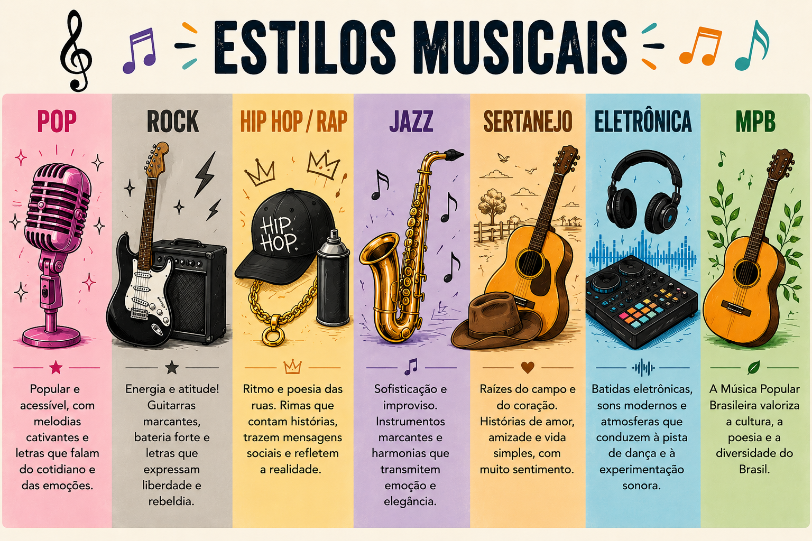

Bem-Vindos ao mundo da música
Por: Giovanna
Olá amantes de música e sejam bem-vindos ao meu blog
Fala, pessoal! Sejam muito bem-vindos ao nosso espaço musical! 🎵 Aqui vamos explorar os mais diversos estilos musicais, conhecer suas características, curiosidades e a importância que cada um tem na cultura e na vida das pessoas. Do Pop ao Rock, do Jazz ao Sertanejo, da Música Eletrônica à MPB, cada gênero possui uma identidade única e uma forma especial de transmitir emoções. A música está presente no nosso dia a dia, conectando pessoas, contando histórias e despertando sentimentos. Então, aproveitem esse momento para aprender, descobrir novos sons e compartilhar suas experiências musicais. E agora eu quero saber: qual é o seu estilo musical favorito? 🎶 🌌✨